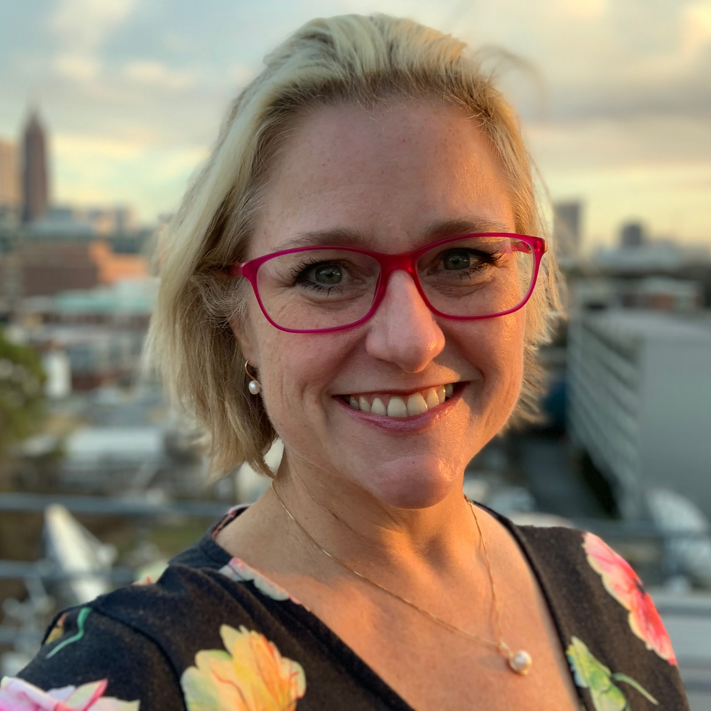

Supporting Students Beyond the Classroom
When you see your student struggling, it’s about more than just a class or a grade; it’s about their confidence, their GPA, and the stress it adds to their life—and yours. You know they need support, but it has to be the right kind of support: one that goes beyond what to learn and focuses on how to learn. This means looking at the whole picture—including study habits, organization, and time management—to provide strategies tailored to their unique strengths and learning style, making them an active partner in their own success. As a former Forsyth County teacher with over a decade of local experience, I designed my practice to do exactly that. My goal is to support and reinforce learning, providing the personalized, one-on-one attention needed to turn frustration into understanding. I work to help your student not only improve their academic performance, but also develop the skills to succeed independently.
More Than Just Tutoring
Compassion:
Start with Understanding
Every student is different. Our work begins by building a relationship to understand your child’s specific challenges, interests, motivations, and learning style. A compassionate approach creates a safe space for students to ask questions and take academic risks.
Creativity:
Build a Custom Plan
There is no one-size-fits-all solution. I leverage my experience to develop individualized resources and creative teaching strategies that connect with your student. This includes a personalized study plan and a weekly follow-up report for you and your student to track progress and focus areas.
Integrity:
Focus on Long-Term Success
My commitment is to provide professional, effective support that yields real results. The goal isn’t just a better grade on the next test; it’s about deepening comprehension and building the confidence that will serve them throughout their academic career.
Committed to Forsyth County Students
My name is Bethanie Boswell. As a teacher with over 10 years of experience in Forsyth County—and as the mother of two FCS graduates—I have a deep, personal understanding of our school system, its curriculum, and the challenges students face. With over 35 years of private tutoring experience, my background has given me specialized experience in tailoring instruction for a wide range of students, including those with neurodivergence, ADHD, or other learning differences. I adapt my methods to ensure every student has a path to success. My passion is helping students build the skills and the confidence to thrive.

What Colleagues Say
“I wish all my teachers had the passionate desire as Ms. Boswell to connect with their students and build those lasting relationships that we know lead to even more effective instruction and achievement.”
— Kim Head
Principal
Lakeside Middle School
“Bethanie is a highly motivated professional who is committed to the academic success and overall well-being of her students. Her warmth and caring attitude provide a positive learning environment for all students.”
— Elizabeth Ferree
Colleague
Lakeside Middle School
“Bethanie has an innate understanding for the social, emotional and academic needs of her students. Her classroom is a safe place for students to... feel free to make mistakes as they navigate a new language.”
— Susan Norce
ESOL Program Coordinator
Forsyth County Schools
An Investment in Their Future
In high school, academic performance can have a significant impact on your student’s future. Strong grades affect their GPA, which is a key factor for college admissions and scholarships like Georgia’s HOPE Scholarship. Investing in targeted academic support is more than just helping with homework; it’s a strategic investment in your child’s future. By focusing on the skills and habits that lead to better grades, you are helping to open doors to new opportunities and potential savings on their college education.
Ready to Take the Next Step?
I invite you to schedule a free, no-obligation, 30-minute consultation. It’s an opportunity for us to connect, discuss your student’s needs, and see if we are a good fit.
The Process:
- Fill Out a Quick Form: Provide some basic information so I can prepare for our conversation.
- I’ll Be in Touch: I will personally contact you within 24 hours to schedule a convenient time for your consultation.
- Meet & Discuss: We’ll talk through your goals and I’ll answer any questions you have.